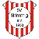

Aufstellung?
Ein Trikot je Team, aufgestellt nach der aktuellen Form. Die Nummer am Trikot ist der Platz in der Formtabelle.
schwächer40
60stärker
Links liegen die Teams unter dem Ligadurchschnitt, rechts davon die darüber.
Formtabelle?
Sortiert nach der Form der letzten fünf Spieltage, nicht nach der Saison.
| # | Team | Form | +/− | Saison | Sp | Tore | Diff | Rest | Tabelle |
|---|---|---|---|---|---|---|---|---|---|
| 1 | TuS Kirchberg II1-0-0 | 58,0 | – | 50,4 | 1 | 5:0 | +5 | 50,0 13 H / 12 A | 1±0 |
| 2 | VfB Baybachhöhe1-0-0 | 54,9 | – | 50,2 | 1 | 2:0 | +2 | 50,0 13 H / 12 A | 4+2 |
| 3 | SV Blankenrath1-0-0 | 53,2 | – | 50,2 | 1 | 4:1 | +3 | 50,0 12 H / 13 A | 2−1 |
| 4 | TuS Rheinböllen1-0-0 | 53,2 | – | 50,2 | 1 | 3:0 | +3 | 50,0 12 H / 13 A | 3−1 |
| 5 | SG Braunshorn1-0-0 | 51,8 | – | 50,1 | 1 | 1:0 | +1 | 50,0 12 H / 13 A | 6+1 |
| 6 | SG Rheinblick Oberwesel1-0-0 | 51,8 | – | 50,1 | 1 | 4:3 | +1 | 50,0 12 H / 13 A | 5−1 |
| 7 |  SV Strimmig0-1-0 | 50,7 | – | 50,0 | 1 | 0:0 | +0 | 50,0 13 H / 12 A | 8+1 |
| 8 | SG Bremm0-1-0 | 49,3 | – | 50,0 | 1 | 0:0 | +0 | 50,0 12 H / 13 A | 7−1 |
| 9 | SC Weiler0-0-1 | 48,2 | – | 49,9 | 1 | 3:4 | −1 | 50,0 13 H / 12 A | 9±0 |
| 10 | SG Dickenschied0-0-1 | 48,2 | – | 49,9 | 1 | 0:1 | −1 | 50,0 13 H / 12 A | 10±0 |
| 11 | SG Vorderhunsrück Sabershausen0-0-1 | 46,8 | – | 49,8 | 1 | 1:4 | −3 | 50,0 13 H / 12 A | 12+1 |
| 12 | SG Zell0-0-1 | 46,8 | – | 49,8 | 1 | 0:3 | −3 | 50,0 13 H / 12 A | 13+1 |
| 13 | SSV Boppard0-0-1 | 45,1 | – | 49,8 | 1 | 0:2 | −2 | 50,0 12 H / 13 A | 11−2 |
| 14 | SG Werlau0-0-1 | 42,0 | – | 49,6 | 1 | 0:5 | −5 | 50,0 12 H / 13 A | 14±0 |
Spieltag 1?
Alle Spiele des letzten Spieltags mit ihren Torminuten.
Ein Strich je Tor, oben der Gastgeber, unten der Gast, der Querstrich ist die Halbzeit. Das ! markiert einen Sieg, dem die Prognose weniger als ein Viertel gab. gedreht und Führung verspielt stehen unter den Minuten, in denen es passiert ist.
Form zählt nur die letzten fünf Spieltage, Saison alle bisherigen, 50 ist jeweils Ligadurchschnitt. Der Wert hinter dem Tabellenplatz ist der Abstand zur Formtabelle: +2 heißt zwei Plätze besser als in der offiziellen Tabelle. Alle Spalten und Marker: Erklärungen.
Team im Detail?
Saisonverlauf, alle Ergebnisse, die verbleibenden Gegner, Torschützen und Belag eines Teams.
Verbleibende Gegner
| MD | Datum | Gegner | Stärke |
|---|---|---|---|
| 2 | So 16.08. | SSV Boppard H | 49,8 |
| 3 | Sa 22.08. | VfB Baybachhöhe A | 50,2 |
| 4 | So 30.08. | SG Dickenschied A | 49,9 |
| 5 | So 06.09. | SG Vorderhunsrück Sabershausen H | 49,8 |
| 6 | So 13.09. | SC Weiler A | 49,9 |
| 7 | So 20.09. | SV Strimmig H | 50,0 |
| 8 | So 27.09. | SG Zell A | 49,8 |
| 9 | So 04.10. | TuS Rheinböllen H | 50,2 |
| 10 | Sa 10.10. | SG Bremm A | 50,0 |
| 11 | So 18.10. | SG Rheinblick Oberwesel H | 50,1 |
| 12 | So 25.10. | SV Blankenrath A | 50,2 |
| 13 | So 01.11. | SG Braunshorn H | 50,1 |
| 14 | So 08.11. | SG Werlau H | 49,6 |
| 15 | So 15.11. | SSV Boppard A | 49,8 |
| 16 | So 07.03. | VfB Baybachhöhe H | 50,2 |
| 17 | So 14.03. | SG Dickenschied H | 49,9 |
| 18 | So 21.03. | SG Vorderhunsrück Sabershausen A | 49,8 |
| 19 | So 04.04. | SC Weiler H | 49,9 |
| 20 | So 11.04. | SV Strimmig A | 50,0 |
| 21 | So 18.04. | SG Zell H | 49,8 |
| 22 | So 25.04. | TuS Rheinböllen A | 50,2 |
| 23 | So 02.05. | SG Bremm H | 50,0 |
| 24 | So 09.05. | SG Rheinblick Oberwesel A | 50,1 |
| 25 | So 16.05. | SV Blankenrath H | 50,2 |
| 26 | So 23.05. | SG Braunshorn A | 50,1 |
Saisonverlauf
X-Achse: Spieltag, Y-Achse: Saisonwert über alle bisherigen Spiele. Die anderen Linien bleiben grau zum Vergleich.
Torschützen?
5 Tore von 4 Schützen, der beste 2 davon (40 %).
Ein Segment je Torschütze, der beste zuerst, Eigentore des Gegners grau. Ohne Namen.
Belag?
| Platz | Sp | S-U-N | Tore | Pkt/Sp |
|---|---|---|---|---|
| Rasen | 1 | 1-0-0 | 5:0 | 3,00 |
Diese Saison, Heim- und Auswärtsspiele zusammen. Was der Belag ligaweit ausmacht, steht unter Statistik.
Verbleibende Gegner
| MD | Datum | Gegner | Stärke |
|---|---|---|---|
| 3 | Sa 22.08. | TuS Kirchberg II H | 50,4 |
| 4 | Fr 28.08. | SG Bremm A | 50,0 |
| 5 | Sa 05.09. | SG Dickenschied H | 49,9 |
| 6 | Fr 11.09. | SG Rheinblick Oberwesel A | 50,1 |
| 2 | Di 15.09. | TuS Rheinböllen H | 50,2 |
| 7 | Fr 18.09. | SG Vorderhunsrück Sabershausen H | 49,8 |
| 8 | So 27.09. | SV Blankenrath A | 50,2 |
| 9 | Di 06.10. | SC Weiler H | 49,9 |
| 10 | So 11.10. | SG Braunshorn A | 50,1 |
| 11 | Sa 17.10. | SV Strimmig H | 50,0 |
| 12 | Fr 23.10. | SG Werlau A | 49,6 |
| 13 | Sa 31.10. | SG Zell H | 49,8 |
| 14 | Sa 07.11. | SSV Boppard H | 49,8 |
| 15 | So 15.11. | TuS Rheinböllen A | 50,2 |
| 16 | So 07.03. | TuS Kirchberg II A | 50,4 |
| 17 | So 14.03. | SG Bremm H | 50,0 |
| 18 | So 21.03. | SG Dickenschied A | 49,9 |
| 19 | So 04.04. | SG Rheinblick Oberwesel H | 50,1 |
| 20 | So 11.04. | SG Vorderhunsrück Sabershausen A | 49,8 |
| 21 | So 18.04. | SV Blankenrath H | 50,2 |
| 22 | So 25.04. | SC Weiler A | 49,9 |
| 23 | So 02.05. | SG Braunshorn H | 50,1 |
| 24 | So 09.05. | SV Strimmig A | 50,0 |
| 25 | So 16.05. | SG Werlau H | 49,6 |
| 26 | So 23.05. | SG Zell A | 49,8 |
Saisonverlauf
X-Achse: Spieltag, Y-Achse: Saisonwert über alle bisherigen Spiele. Die anderen Linien bleiben grau zum Vergleich.
Torschützen?
2 Tore von 2 Schützen.
Ein Segment je Torschütze, der beste zuerst, Eigentore des Gegners grau. Ohne Namen.
Belag?
| Platz | Sp | S-U-N | Tore | Pkt/Sp |
|---|---|---|---|---|
| Rasen | 1 | 1-0-0 | 2:0 | 3,00 |
Diese Saison, Heim- und Auswärtsspiele zusammen. Was der Belag ligaweit ausmacht, steht unter Statistik.
Verbleibende Gegner
| MD | Datum | Gegner | Stärke |
|---|---|---|---|
| 2 | So 16.08. | SC Weiler A | 49,9 |
| 3 | So 23.08. | SV Strimmig H | 50,0 |
| 4 | So 30.08. | SG Zell A | 49,8 |
| 5 | So 06.09. | TuS Rheinböllen H | 50,2 |
| 6 | Mi 09.09. | SG Bremm A | 50,0 |
| 7 | So 20.09. | SG Rheinblick Oberwesel H | 50,1 |
| 8 | So 27.09. | VfB Baybachhöhe H | 50,2 |
| 9 | Fr 02.10. | SG Braunshorn A | 50,1 |
| 10 | So 11.10. | SG Werlau H | 49,6 |
| 11 | So 18.10. | SSV Boppard A | 49,8 |
| 12 | So 25.10. | TuS Kirchberg II H | 50,4 |
| 13 | So 01.11. | SG Dickenschied A | 49,9 |
| 14 | So 08.11. | SG Vorderhunsrück Sabershausen A | 49,8 |
| 15 | So 15.11. | SC Weiler H | 49,9 |
| 16 | So 07.03. | SV Strimmig A | 50,0 |
| 17 | So 14.03. | SG Zell H | 49,8 |
| 18 | So 21.03. | TuS Rheinböllen A | 50,2 |
| 19 | So 04.04. | SG Bremm H | 50,0 |
| 20 | So 11.04. | SG Rheinblick Oberwesel A | 50,1 |
| 21 | So 18.04. | VfB Baybachhöhe A | 50,2 |
| 22 | So 25.04. | SG Braunshorn H | 50,1 |
| 23 | So 02.05. | SG Werlau A | 49,6 |
| 24 | So 09.05. | SSV Boppard H | 49,8 |
| 25 | So 16.05. | TuS Kirchberg II A | 50,4 |
| 26 | So 23.05. | SG Dickenschied H | 49,9 |
Saisonverlauf
X-Achse: Spieltag, Y-Achse: Saisonwert über alle bisherigen Spiele. Die anderen Linien bleiben grau zum Vergleich.
Torschützen?
4 Tore von 2 Schützen.
Ein Segment je Torschütze, der beste zuerst, Eigentore des Gegners grau. Ohne Namen.
Belag?
| Platz | Sp | S-U-N | Tore | Pkt/Sp |
|---|---|---|---|---|
| KunstrasenHeimplatz | 1 | 1-0-0 | 4:1 | 3,00 |
Diese Saison, Heim- und Auswärtsspiele zusammen. Was der Belag ligaweit ausmacht, steht unter Statistik.
Verbleibende Gegner
| MD | Datum | Gegner | Stärke |
|---|---|---|---|
| 3 | Fr 21.08. | SG Bremm A | 50,0 |
| 4 | Fr 28.08. | SG Rheinblick Oberwesel H | 50,1 |
| 5 | So 06.09. | SV Blankenrath A | 50,2 |
| 6 | Fr 11.09. | SG Braunshorn H | 50,1 |
| 2 | Di 15.09. | VfB Baybachhöhe A | 50,2 |
| 7 | So 20.09. | SG Werlau A | 49,6 |
| 8 | So 27.09. | SSV Boppard H | 49,8 |
| 9 | So 04.10. | TuS Kirchberg II A | 50,4 |
| 10 | So 11.10. | SG Dickenschied H | 49,9 |
| 11 | So 18.10. | SG Vorderhunsrück Sabershausen A | 49,8 |
| 12 | So 25.10. | SC Weiler H | 49,9 |
| 13 | So 01.11. | SV Strimmig A | 50,0 |
| 14 | So 08.11. | SG Zell A | 49,8 |
| 15 | So 15.11. | VfB Baybachhöhe H | 50,2 |
| 16 | Fr 05.03. | SG Bremm H | 50,0 |
| 17 | So 14.03. | SG Rheinblick Oberwesel A | 50,1 |
| 18 | So 21.03. | SV Blankenrath H | 50,2 |
| 19 | So 04.04. | SG Braunshorn A | 50,1 |
| 20 | So 11.04. | SG Werlau H | 49,6 |
| 21 | So 18.04. | SSV Boppard A | 49,8 |
| 22 | So 25.04. | TuS Kirchberg II H | 50,4 |
| 23 | So 02.05. | SG Dickenschied A | 49,9 |
| 24 | So 09.05. | SG Vorderhunsrück Sabershausen H | 49,8 |
| 25 | So 16.05. | SC Weiler A | 49,9 |
| 26 | So 23.05. | SV Strimmig H | 50,0 |
Saisonverlauf
X-Achse: Spieltag, Y-Achse: Saisonwert über alle bisherigen Spiele. Die anderen Linien bleiben grau zum Vergleich.
Torschützen?
3 Tore von 2 Schützen.
Ein Segment je Torschütze, der beste zuerst, Eigentore des Gegners grau. Ohne Namen.
Belag?
| Platz | Sp | S-U-N | Tore | Pkt/Sp |
|---|---|---|---|---|
| KunstrasenHeimplatz | 1 | 1-0-0 | 3:0 | 3,00 |
Diese Saison, Heim- und Auswärtsspiele zusammen. Was der Belag ligaweit ausmacht, steht unter Statistik.
Verbleibende Gegner
| MD | Datum | Gegner | Stärke |
|---|---|---|---|
| 2 | So 16.08. | SG Vorderhunsrück Sabershausen A | 49,8 |
| 3 | So 23.08. | SC Weiler H | 49,9 |
| 4 | So 30.08. | SV Strimmig A | 50,0 |
| 5 | So 06.09. | SG Zell H | 49,8 |
| 6 | Fr 11.09. | TuS Rheinböllen A | 50,2 |
| 7 | So 20.09. | SG Bremm H | 50,0 |
| 8 | So 27.09. | SG Rheinblick Oberwesel A | 50,1 |
| 9 | Fr 02.10. | SV Blankenrath H | 50,2 |
| 10 | So 11.10. | VfB Baybachhöhe H | 50,2 |
| 11 | So 18.10. | SG Werlau A | 49,6 |
| 12 | So 25.10. | SSV Boppard H | 49,8 |
| 13 | So 01.11. | TuS Kirchberg II A | 50,4 |
| 14 | So 08.11. | SG Dickenschied A | 49,9 |
| 15 | So 15.11. | SG Vorderhunsrück Sabershausen H | 49,8 |
| 16 | So 07.03. | SC Weiler A | 49,9 |
| 17 | So 14.03. | SV Strimmig H | 50,0 |
| 18 | So 21.03. | SG Zell A | 49,8 |
| 19 | So 04.04. | TuS Rheinböllen H | 50,2 |
| 20 | So 11.04. | SG Bremm A | 50,0 |
| 21 | So 18.04. | SG Rheinblick Oberwesel H | 50,1 |
| 22 | So 25.04. | SV Blankenrath A | 50,2 |
| 23 | So 02.05. | VfB Baybachhöhe A | 50,2 |
| 24 | So 09.05. | SG Werlau H | 49,6 |
| 25 | So 16.05. | SSV Boppard A | 49,8 |
| 26 | So 23.05. | TuS Kirchberg II H | 50,4 |
Saisonverlauf
X-Achse: Spieltag, Y-Achse: Saisonwert über alle bisherigen Spiele. Die anderen Linien bleiben grau zum Vergleich.
Torschützen?
1 Tore von 1 Schützen.
Ein Segment je Torschütze, der beste zuerst, Eigentore des Gegners grau. Ohne Namen.
Belag?
| Platz | Sp | S-U-N | Tore | Pkt/Sp |
|---|---|---|---|---|
| RasenHeimplatz | 1 | 1-0-0 | 1:0 | 3,00 |
Diese Saison, Heim- und Auswärtsspiele zusammen. Was der Belag ligaweit ausmacht, steht unter Statistik.
Verbleibende Gegner
| MD | Datum | Gegner | Stärke |
|---|---|---|---|
| 2 | So 16.08. | SV Strimmig A | 50,0 |
| 3 | So 23.08. | SG Zell H | 49,8 |
| 4 | Fr 28.08. | TuS Rheinböllen A | 50,2 |
| 5 | So 06.09. | SG Bremm H | 50,0 |
| 6 | Fr 11.09. | VfB Baybachhöhe H | 50,2 |
| 7 | So 20.09. | SV Blankenrath A | 50,2 |
| 8 | So 27.09. | SG Braunshorn H | 50,1 |
| 9 | So 04.10. | SG Werlau A | 49,6 |
| 10 | So 11.10. | SSV Boppard H | 49,8 |
| 11 | So 18.10. | TuS Kirchberg II A | 50,4 |
| 12 | So 25.10. | SG Dickenschied H | 49,9 |
| 13 | So 01.11. | SG Vorderhunsrück Sabershausen A | 49,8 |
| 14 | So 08.11. | SC Weiler A | 49,9 |
| 15 | So 15.11. | SV Strimmig H | 50,0 |
| 16 | So 07.03. | SG Zell A | 49,8 |
| 17 | So 14.03. | TuS Rheinböllen H | 50,2 |
| 18 | So 21.03. | SG Bremm A | 50,0 |
| 19 | So 04.04. | VfB Baybachhöhe A | 50,2 |
| 20 | So 11.04. | SV Blankenrath H | 50,2 |
| 21 | So 18.04. | SG Braunshorn A | 50,1 |
| 22 | So 25.04. | SG Werlau H | 49,6 |
| 23 | So 02.05. | SSV Boppard A | 49,8 |
| 24 | So 09.05. | TuS Kirchberg II H | 50,4 |
| 25 | So 16.05. | SG Dickenschied A | 49,9 |
| 26 | So 23.05. | SG Vorderhunsrück Sabershausen H | 49,8 |
Saisonverlauf
X-Achse: Spieltag, Y-Achse: Saisonwert über alle bisherigen Spiele. Die anderen Linien bleiben grau zum Vergleich.
Torschützen?
4 Tore von 3 Schützen, 1 Eigentor des Gegners.
Ein Segment je Torschütze, der beste zuerst, Eigentore des Gegners grau. Ohne Namen.
Belag?
| Platz | Sp | S-U-N | Tore | Pkt/Sp |
|---|---|---|---|---|
| RasenHeimplatz | 1 | 1-0-0 | 4:3 | 3,00 |
Diese Saison, Heim- und Auswärtsspiele zusammen. Was der Belag ligaweit ausmacht, steht unter Statistik.
Verbleibende Gegner
| MD | Datum | Gegner | Stärke |
|---|---|---|---|
| 2 | So 16.08. | SG Rheinblick Oberwesel H | 50,1 |
| 3 | So 23.08. | SV Blankenrath A | 50,2 |
| 4 | So 30.08. | SG Braunshorn H | 50,1 |
| 5 | So 06.09. | SG Werlau A | 49,6 |
| 6 | So 13.09. | SSV Boppard H | 49,8 |
| 7 | So 20.09. | TuS Kirchberg II A | 50,4 |
| 8 | So 27.09. | SG Dickenschied H | 49,9 |
| 9 | So 04.10. | SG Vorderhunsrück Sabershausen A | 49,8 |
| 10 | So 11.10. | SC Weiler H | 49,9 |
| 11 | Sa 17.10. | VfB Baybachhöhe A | 50,2 |
| 12 | So 25.10. | SG Zell A | 49,8 |
| 13 | So 01.11. | TuS Rheinböllen H | 50,2 |
| 14 | So 08.11. | SG Bremm H | 50,0 |
| 15 | So 15.11. | SG Rheinblick Oberwesel A | 50,1 |
| 16 | So 07.03. | SV Blankenrath H | 50,2 |
| 17 | So 14.03. | SG Braunshorn A | 50,1 |
| 18 | So 21.03. | SG Werlau H | 49,6 |
| 19 | So 04.04. | SSV Boppard A | 49,8 |
| 20 | So 11.04. | TuS Kirchberg II H | 50,4 |
| 21 | So 18.04. | SG Dickenschied A | 49,9 |
| 22 | So 25.04. | SG Vorderhunsrück Sabershausen H | 49,8 |
| 23 | So 02.05. | SC Weiler A | 49,9 |
| 24 | So 09.05. | VfB Baybachhöhe H | 50,2 |
| 25 | So 16.05. | SG Zell H | 49,8 |
| 26 | So 23.05. | TuS Rheinböllen A | 50,2 |
Saisonverlauf
X-Achse: Spieltag, Y-Achse: Saisonwert über alle bisherigen Spiele. Die anderen Linien bleiben grau zum Vergleich.
Belag?
| Platz | Sp | S-U-N | Tore | Pkt/Sp |
|---|---|---|---|---|
| Rasen | 1 | 0-1-0 | 0:0 | 1,00 |
Diese Saison, Heim- und Auswärtsspiele zusammen. Was der Belag ligaweit ausmacht, steht unter Statistik.
Verbleibende Gegner
| MD | Datum | Gegner | Stärke |
|---|---|---|---|
| 2 | So 16.08. | SG Zell A | 49,8 |
| 3 | Fr 21.08. | TuS Rheinböllen H | 50,2 |
| 4 | Fr 28.08. | VfB Baybachhöhe H | 50,2 |
| 5 | So 06.09. | SG Rheinblick Oberwesel A | 50,1 |
| 6 | Mi 09.09. | SV Blankenrath H | 50,2 |
| 7 | So 20.09. | SG Braunshorn A | 50,1 |
| 8 | Fr 25.09. | SG Werlau H | 49,6 |
| 9 | Sa 03.10. | SSV Boppard A | 49,8 |
| 10 | Sa 10.10. | TuS Kirchberg II H | 50,4 |
| 11 | So 18.10. | SG Dickenschied A | 49,9 |
| 12 | Fr 23.10. | SG Vorderhunsrück Sabershausen H | 49,8 |
| 13 | So 01.11. | SC Weiler A | 49,9 |
| 14 | So 08.11. | SV Strimmig A | 50,0 |
| 15 | Fr 13.11. | SG Zell H | 49,8 |
| 16 | Fr 05.03. | TuS Rheinböllen A | 50,2 |
| 17 | So 14.03. | VfB Baybachhöhe A | 50,2 |
| 18 | So 21.03. | SG Rheinblick Oberwesel H | 50,1 |
| 19 | So 04.04. | SV Blankenrath A | 50,2 |
| 20 | So 11.04. | SG Braunshorn H | 50,1 |
| 21 | So 18.04. | SG Werlau A | 49,6 |
| 22 | So 25.04. | SSV Boppard H | 49,8 |
| 23 | So 02.05. | TuS Kirchberg II A | 50,4 |
| 24 | So 09.05. | SG Dickenschied H | 49,9 |
| 25 | So 16.05. | SG Vorderhunsrück Sabershausen A | 49,8 |
| 26 | So 23.05. | SC Weiler H | 49,9 |
Saisonverlauf
X-Achse: Spieltag, Y-Achse: Saisonwert über alle bisherigen Spiele. Die anderen Linien bleiben grau zum Vergleich.
Belag?
| Platz | Sp | S-U-N | Tore | Pkt/Sp |
|---|---|---|---|---|
| RasenHeimplatz | 1 | 0-1-0 | 0:0 | 1,00 |
Diese Saison, Heim- und Auswärtsspiele zusammen. Was der Belag ligaweit ausmacht, steht unter Statistik.
Verbleibende Gegner
| MD | Datum | Gegner | Stärke |
|---|---|---|---|
| 2 | So 16.08. | SV Blankenrath H | 50,2 |
| 3 | So 23.08. | SG Braunshorn A | 50,1 |
| 4 | So 30.08. | SG Werlau H | 49,6 |
| 5 | Mi 02.09. | SSV Boppard A | 49,8 |
| 6 | So 13.09. | TuS Kirchberg II H | 50,4 |
| 7 | So 20.09. | SG Dickenschied A | 49,9 |
| 8 | So 27.09. | SG Vorderhunsrück Sabershausen H | 49,8 |
| 9 | Di 06.10. | VfB Baybachhöhe A | 50,2 |
| 10 | So 11.10. | SV Strimmig A | 50,0 |
| 11 | So 18.10. | SG Zell H | 49,8 |
| 12 | So 25.10. | TuS Rheinböllen A | 50,2 |
| 13 | So 01.11. | SG Bremm H | 50,0 |
| 14 | So 08.11. | SG Rheinblick Oberwesel H | 50,1 |
| 15 | So 15.11. | SV Blankenrath A | 50,2 |
| 16 | So 07.03. | SG Braunshorn H | 50,1 |
| 17 | So 14.03. | SG Werlau A | 49,6 |
| 18 | So 21.03. | SSV Boppard H | 49,8 |
| 19 | So 04.04. | TuS Kirchberg II A | 50,4 |
| 20 | So 11.04. | SG Dickenschied H | 49,9 |
| 21 | So 18.04. | SG Vorderhunsrück Sabershausen A | 49,8 |
| 22 | So 25.04. | VfB Baybachhöhe H | 50,2 |
| 23 | So 02.05. | SV Strimmig H | 50,0 |
| 24 | So 09.05. | SG Zell A | 49,8 |
| 25 | So 16.05. | TuS Rheinböllen H | 50,2 |
| 26 | So 23.05. | SG Bremm A | 50,0 |
Saisonverlauf
X-Achse: Spieltag, Y-Achse: Saisonwert über alle bisherigen Spiele. Die anderen Linien bleiben grau zum Vergleich.
Torschützen?
3 Tore von 3 Schützen.
Ein Segment je Torschütze, der beste zuerst, Eigentore des Gegners grau. Ohne Namen.
Belag?
| Platz | Sp | S-U-N | Tore | Pkt/Sp |
|---|---|---|---|---|
| Rasen | 1 | 0-0-1 | 3:4 | 0,00 |
Diese Saison, Heim- und Auswärtsspiele zusammen. Was der Belag ligaweit ausmacht, steht unter Statistik.
Verbleibende Gegner
| MD | Datum | Gegner | Stärke |
|---|---|---|---|
| 2 | So 16.08. | SG Werlau H | 49,6 |
| 3 | So 23.08. | SSV Boppard A | 49,8 |
| 4 | So 30.08. | TuS Kirchberg II H | 50,4 |
| 5 | Sa 05.09. | VfB Baybachhöhe A | 50,2 |
| 6 | So 13.09. | SG Vorderhunsrück Sabershausen A | 49,8 |
| 7 | So 20.09. | SC Weiler H | 49,9 |
| 8 | So 27.09. | SV Strimmig A | 50,0 |
| 9 | So 04.10. | SG Zell H | 49,8 |
| 10 | So 11.10. | TuS Rheinböllen A | 50,2 |
| 11 | So 18.10. | SG Bremm H | 50,0 |
| 12 | So 25.10. | SG Rheinblick Oberwesel A | 50,1 |
| 13 | So 01.11. | SV Blankenrath H | 50,2 |
| 14 | So 08.11. | SG Braunshorn H | 50,1 |
| 15 | So 15.11. | SG Werlau A | 49,6 |
| 16 | So 07.03. | SSV Boppard H | 49,8 |
| 17 | So 14.03. | TuS Kirchberg II A | 50,4 |
| 18 | So 21.03. | VfB Baybachhöhe H | 50,2 |
| 19 | So 04.04. | SG Vorderhunsrück Sabershausen H | 49,8 |
| 20 | So 11.04. | SC Weiler A | 49,9 |
| 21 | So 18.04. | SV Strimmig H | 50,0 |
| 22 | So 25.04. | SG Zell A | 49,8 |
| 23 | So 02.05. | TuS Rheinböllen H | 50,2 |
| 24 | So 09.05. | SG Bremm A | 50,0 |
| 25 | So 16.05. | SG Rheinblick Oberwesel H | 50,1 |
| 26 | So 23.05. | SV Blankenrath A | 50,2 |
Saisonverlauf
X-Achse: Spieltag, Y-Achse: Saisonwert über alle bisherigen Spiele. Die anderen Linien bleiben grau zum Vergleich.
Belag?
| Platz | Sp | S-U-N | Tore | Pkt/Sp |
|---|---|---|---|---|
| Rasen | 1 | 0-0-1 | 0:1 | 0,00 |
Diese Saison, Heim- und Auswärtsspiele zusammen. Was der Belag ligaweit ausmacht, steht unter Statistik.
Verbleibende Gegner
| MD | Datum | Gegner | Stärke |
|---|---|---|---|
| 2 | So 16.08. | SG Braunshorn H | 50,1 |
| 3 | So 23.08. | SG Werlau A | 49,6 |
| 4 | So 30.08. | SSV Boppard H | 49,8 |
| 5 | So 06.09. | TuS Kirchberg II A | 50,4 |
| 6 | So 13.09. | SG Dickenschied H | 49,9 |
| 7 | Fr 18.09. | VfB Baybachhöhe A | 50,2 |
| 8 | So 27.09. | SC Weiler A | 49,9 |
| 9 | So 04.10. | SV Strimmig H | 50,0 |
| 10 | Fr 09.10. | SG Zell A | 49,8 |
| 11 | So 18.10. | TuS Rheinböllen H | 50,2 |
| 12 | Fr 23.10. | SG Bremm A | 50,0 |
| 13 | So 01.11. | SG Rheinblick Oberwesel H | 50,1 |
| 14 | So 08.11. | SV Blankenrath H | 50,2 |
| 15 | So 15.11. | SG Braunshorn A | 50,1 |
| 16 | So 07.03. | SG Werlau H | 49,6 |
| 17 | So 14.03. | SSV Boppard A | 49,8 |
| 18 | So 21.03. | TuS Kirchberg II H | 50,4 |
| 19 | So 04.04. | SG Dickenschied A | 49,9 |
| 20 | So 11.04. | VfB Baybachhöhe H | 50,2 |
| 21 | So 18.04. | SC Weiler H | 49,9 |
| 22 | So 25.04. | SV Strimmig A | 50,0 |
| 23 | So 02.05. | SG Zell H | 49,8 |
| 24 | So 09.05. | TuS Rheinböllen A | 50,2 |
| 25 | So 16.05. | SG Bremm H | 50,0 |
| 26 | So 23.05. | SG Rheinblick Oberwesel A | 50,1 |
Saisonverlauf
X-Achse: Spieltag, Y-Achse: Saisonwert über alle bisherigen Spiele. Die anderen Linien bleiben grau zum Vergleich.
Torschützen?
1 Tore von 1 Schützen.
Ein Segment je Torschütze, der beste zuerst, Eigentore des Gegners grau. Ohne Namen.
Belag?
| Platz | Sp | S-U-N | Tore | Pkt/Sp |
|---|---|---|---|---|
| Kunstrasen | 1 | 0-0-1 | 1:4 | 0,00 |
Diese Saison, Heim- und Auswärtsspiele zusammen. Was der Belag ligaweit ausmacht, steht unter Statistik.
Verbleibende Gegner
| MD | Datum | Gegner | Stärke |
|---|---|---|---|
| 2 | So 16.08. | SG Bremm H | 50,0 |
| 3 | So 23.08. | SG Rheinblick Oberwesel A | 50,1 |
| 4 | So 30.08. | SV Blankenrath H | 50,2 |
| 5 | So 06.09. | SG Braunshorn A | 50,1 |
| 6 | So 13.09. | SG Werlau H | 49,6 |
| 7 | So 20.09. | SSV Boppard A | 49,8 |
| 8 | So 27.09. | TuS Kirchberg II H | 50,4 |
| 9 | So 04.10. | SG Dickenschied A | 49,9 |
| 10 | Fr 09.10. | SG Vorderhunsrück Sabershausen H | 49,8 |
| 11 | So 18.10. | SC Weiler A | 49,9 |
| 12 | So 25.10. | SV Strimmig H | 50,0 |
| 13 | Sa 31.10. | VfB Baybachhöhe A | 50,2 |
| 14 | So 08.11. | TuS Rheinböllen H | 50,2 |
| 15 | Fr 13.11. | SG Bremm A | 50,0 |
| 16 | So 07.03. | SG Rheinblick Oberwesel H | 50,1 |
| 17 | So 14.03. | SV Blankenrath A | 50,2 |
| 18 | So 21.03. | SG Braunshorn H | 50,1 |
| 19 | So 04.04. | SG Werlau A | 49,6 |
| 20 | So 11.04. | SSV Boppard H | 49,8 |
| 21 | So 18.04. | TuS Kirchberg II A | 50,4 |
| 22 | So 25.04. | SG Dickenschied H | 49,9 |
| 23 | So 02.05. | SG Vorderhunsrück Sabershausen A | 49,8 |
| 24 | So 09.05. | SC Weiler H | 49,9 |
| 25 | So 16.05. | SV Strimmig A | 50,0 |
| 26 | So 23.05. | VfB Baybachhöhe H | 50,2 |
Saisonverlauf
X-Achse: Spieltag, Y-Achse: Saisonwert über alle bisherigen Spiele. Die anderen Linien bleiben grau zum Vergleich.
Belag?
| Platz | Sp | S-U-N | Tore | Pkt/Sp |
|---|---|---|---|---|
| Kunstrasen | 1 | 0-0-1 | 0:3 | 0,00 |
Diese Saison, Heim- und Auswärtsspiele zusammen. Was der Belag ligaweit ausmacht, steht unter Statistik.
Verbleibende Gegner
| MD | Datum | Gegner | Stärke |
|---|---|---|---|
| 2 | So 16.08. | TuS Kirchberg II A | 50,4 |
| 3 | So 23.08. | SG Dickenschied H | 49,9 |
| 4 | So 30.08. | SG Vorderhunsrück Sabershausen A | 49,8 |
| 5 | Mi 02.09. | SC Weiler H | 49,9 |
| 6 | So 13.09. | SV Strimmig A | 50,0 |
| 7 | So 20.09. | SG Zell H | 49,8 |
| 8 | So 27.09. | TuS Rheinböllen A | 50,2 |
| 9 | Sa 03.10. | SG Bremm H | 50,0 |
| 10 | So 11.10. | SG Rheinblick Oberwesel A | 50,1 |
| 11 | So 18.10. | SV Blankenrath H | 50,2 |
| 12 | So 25.10. | SG Braunshorn A | 50,1 |
| 13 | So 01.11. | SG Werlau H | 49,6 |
| 14 | Sa 07.11. | VfB Baybachhöhe A | 50,2 |
| 15 | So 15.11. | TuS Kirchberg II H | 50,4 |
| 16 | So 07.03. | SG Dickenschied A | 49,9 |
| 17 | So 14.03. | SG Vorderhunsrück Sabershausen H | 49,8 |
| 18 | So 21.03. | SC Weiler A | 49,9 |
| 19 | So 04.04. | SV Strimmig H | 50,0 |
| 20 | So 11.04. | SG Zell A | 49,8 |
| 21 | So 18.04. | TuS Rheinböllen H | 50,2 |
| 22 | So 25.04. | SG Bremm A | 50,0 |
| 23 | So 02.05. | SG Rheinblick Oberwesel H | 50,1 |
| 24 | So 09.05. | SV Blankenrath A | 50,2 |
| 25 | So 16.05. | SG Braunshorn H | 50,1 |
| 26 | So 23.05. | SG Werlau A | 49,6 |
Saisonverlauf
X-Achse: Spieltag, Y-Achse: Saisonwert über alle bisherigen Spiele. Die anderen Linien bleiben grau zum Vergleich.
Belag?
| Platz | Sp | S-U-N | Tore | Pkt/Sp |
|---|---|---|---|---|
| RasenHeimplatz | 1 | 0-0-1 | 0:2 | 0,00 |
Diese Saison, Heim- und Auswärtsspiele zusammen. Was der Belag ligaweit ausmacht, steht unter Statistik.
Verbleibende Gegner
| MD | Datum | Gegner | Stärke |
|---|---|---|---|
| 2 | So 16.08. | SG Dickenschied A | 49,9 |
| 3 | So 23.08. | SG Vorderhunsrück Sabershausen H | 49,8 |
| 4 | So 30.08. | SC Weiler A | 49,9 |
| 5 | So 06.09. | SV Strimmig H | 50,0 |
| 6 | So 13.09. | SG Zell A | 49,8 |
| 7 | So 20.09. | TuS Rheinböllen H | 50,2 |
| 8 | Fr 25.09. | SG Bremm A | 50,0 |
| 9 | So 04.10. | SG Rheinblick Oberwesel H | 50,1 |
| 10 | So 11.10. | SV Blankenrath A | 50,2 |
| 11 | So 18.10. | SG Braunshorn H | 50,1 |
| 12 | Fr 23.10. | VfB Baybachhöhe H | 50,2 |
| 13 | So 01.11. | SSV Boppard A | 49,8 |
| 14 | So 08.11. | TuS Kirchberg II A | 50,4 |
| 15 | So 15.11. | SG Dickenschied H | 49,9 |
| 16 | So 07.03. | SG Vorderhunsrück Sabershausen A | 49,8 |
| 17 | So 14.03. | SC Weiler H | 49,9 |
| 18 | So 21.03. | SV Strimmig A | 50,0 |
| 19 | So 04.04. | SG Zell H | 49,8 |
| 20 | So 11.04. | TuS Rheinböllen A | 50,2 |
| 21 | So 18.04. | SG Bremm H | 50,0 |
| 22 | So 25.04. | SG Rheinblick Oberwesel A | 50,1 |
| 23 | So 02.05. | SV Blankenrath H | 50,2 |
| 24 | So 09.05. | SG Braunshorn A | 50,1 |
| 25 | So 16.05. | VfB Baybachhöhe A | 50,2 |
| 26 | So 23.05. | SSV Boppard H | 49,8 |
Saisonverlauf
X-Achse: Spieltag, Y-Achse: Saisonwert über alle bisherigen Spiele. Die anderen Linien bleiben grau zum Vergleich.
Belag?
| Platz | Sp | S-U-N | Tore | Pkt/Sp |
|---|---|---|---|---|
| RasenHeimplatz | 1 | 0-0-1 | 0:5 | 0,00 |
Diese Saison, Heim- und Auswärtsspiele zusammen. Was der Belag ligaweit ausmacht, steht unter Statistik.
Statistik
Was die Spielberichte über die Liga verraten: Belag, Rückstände, Torschützen.
Torschützen?
| Team | Tore | Schützen | Bester | Anteil |
|---|---|---|---|---|
TuS Kirchberg II | 5 | 4 | 2 | 40 % |
SV Blankenrath | 4 | 2 | 2 | zu wenige |
SG Rheinblick Oberwesel | 4 | 3 | 1 | zu wenige |
TuS Rheinböllen | 3 | 2 | 2 | zu wenige |
SC Weiler | 3 | 3 | 1 | zu wenige |
VfB Baybachhöhe | 2 | 2 | 1 | zu wenige |
SG Vorderhunsrück Sabershausen | 1 | 1 | 1 | zu wenige |
SG Braunshorn | 1 | 1 | 1 | zu wenige |
Wie sehr ein Team an einem Spieler hängt: der Anteil seines besten Torschützen an allen Toren, ohne Namen. Unter 5 Toren steht kein Anteil. Die Verteilung je Team steht unter Team im Detail.
Belag?
| Platz | Tore/Spiel | Heimbonus |
|---|---|---|
| Rasen118 Spiele | 3,83 | +8 |
| Kunstrasen98 Spiele | 3,79 | +20 |
| Hartplatz8 Spiele | 3,12 | +15 |
| Liga gesamt224 Spiele | 3,79 | +13 |
Heimbonus: um wie viele Prozentpunkte der Gastgeber besser abschneidet, als die Stärke beider Teams erwarten lässt. +8 auf Rasen heißt 8 Siege mehr aus hundert Heimspielen.
Rückstand und Führung?
diesen Spieltag keines
diesen Spieltag keines
Wer das erste Tor schießt, gewinnt 83 % der Spiele, 0 % enden remis, 17 % gehen noch verloren.
Aus den Torminuten dieser Saison: die meisten Punkte nach Rückstand und die meisten aus eigener Führung liegen gelassen.
Erklärungen
Wie jede Zahl auf dieser Seite zustande kommt. Das ? an einem Element führt hierher.
Form und Saison
Beide Werte sind eine Elo-Wertung: Start bei 1500, nach jedem Spiel wandern Punkte vom Verlierer zum Gewinner, mehr bei einer Überraschung oder einem hohen Ergebnis (logarithmisch gedämpft), mit 100 Punkten Heimvorteil. Für die Anzeige auf 0–100 umgerechnet, 50 ist Ligadurchschnitt. Saison zählt alle Spiele und wird nach wenigen Spielen Richtung 50 gedrückt, deshalb liegt die Liga früh eng beieinander. Form rechnet dieselbe Wertung nur über die letzten 5 Spieltage, jedes Mal neu von 1500 aus und ungedämpft. Sie zeigt, wer gerade läuft.
Formtabelle
Sortiert nach Form. +/− ist die Veränderung seit dem letzten Spieltag; die fünf Punkte unter dem Namen sind die letzten Spiele, grün Sieg, grau Remis, rot Niederlage. Tabelle ist der offizielle Platz, der Chip dahinter der Abstand zur Formtabelle: +2 heißt zwei Plätze besser als in der Tabelle. Rest ist die mittlere Saisonstärke der verbleibenden Gegner, die Aufteilung dahinter, wie viele davon zu Hause sind. Zwei Marker nach fester Regel: Mannschaft der Stunde beim größten Vorsprung auf den eigenen Tabellenplatz (mindestens zwei Plätze), Formsprung beim größten Zugewinn seit dem letzten Spieltag (mindestens 1,5 Punkte, nie auf derselben Zeile).
Spieltag
Jedes Spiel als eine Zeile: die Torminuten als Striche von Anpfiff bis Abpfiff, oben der Gastgeber, unten der Gast, der Querstrich ist die Halbzeit; darunter Anstoß, Platz, Zuschauer, Halbzeitstand und die Prognose vor dem Spiel. Drei Notizen nach fester Regel: ein ! hinter einem Sieg, dem die Prognose unter 25 % gab. Nur Siege, weil das Remis in jeder Paarung das Unwahrscheinlichste ist. gedreht unter den Minuten, in denen der spätere Sieger zurücklag, Führung verspielt bei einem Remis unter den Minuten der verspielten Führung.
Team im Detail
Siegchance vorher ist die Prognose für dieses Spiel aus Sicht dieses Teams, nur aus den Ergebnissen bis dahin; das ! folgt der Regel des Spieltagsbogens. Verlauf ist derselbe Strich, die eigenen Tore oben. Stärke der verbleibenden Gegner ist deren Saisonwert. Angstgegner ist der Gegner, gegen den ein Team über alle Saisons am weitesten hinter der Erwartung aus Stärke und Heimvorteil zurückblieb (Sieg 1, Remis ½, Niederlage 0, aufsummiert), ab 2 Duellen und einem ganzen Sieg Rückstand.
Prognose
Jedes Team bekommt aus allen bisherigen Ergebnissen eine Angriffs- und eine Abwehrstärke; daraus folgen die erwarteten Tore beider Seiten (Heimvorteil eingerechnet) und aus deren Abstand die drei Prozentwerte, geeicht an der kompletten Saison 2025/26. Tore erwartet ist die Summe beider Seiten: offenes Spiel oder Abtasten. Topspiel ist die Paarung mit der besten gemeinsamen Form.
Ein Remis ist nie am wahrscheinlichsten, weil beide Seiten dieselbe Torzahl treffen müssten. Die Prozente liegen eng beieinander, weil die Ergebnisse in dieser Liga stark streuen: Ein ganzes Tor Vorsprung in der Erwartung ist rund sechs Prozentpunkte wert.
Bilanz: Das Modell tippt immer den wahrscheinlichsten Ausgang, ob mit 51 oder 75 %; daneben ein Fehlerwert, der auch die Höhe der Prozente bewertet (kleiner ist besser). Verglichen wird mit der sturen Liga-Quote, als Tipp: immer Heimsieg. Die Bilanz wird jedes Mal aus dem Spielplan neu gerechnet; in der Vorsaison lag die Trefferquote bei 57 %.
Saisonausblick
Die verbleibenden Spiele werden 4000-mal mit den erwarteten Toren der Prognose durchgespielt und die Tabellen gezählt. Die Stärken selbst werden nicht variiert; früh in der Saison folgen die Prozente vor allem der Tabelle. Unter 1 % ist nicht null.
Belag und Heimbonus
Tore pro Spiel und Heimbonus je Belag über alle Saisons. Heimbonus ist, was die Heimteams tatsächlich holten, minus dem, was die Stärke beider Teams ohne Heimvorteil erwarten ließe, in Prozentpunkten. Auf Kunstrasen holen Heimteams mehr heraus als auf Rasen. Die Belag-Zeilen im Team-Panel zeigen nur diese Saison und dieses Team, Heim und Auswärts zusammen.
Rückstand und Führung
Aus den Torminuten dieser Saison. Comeback-Team: die meisten Punkte aus Spielen mit Rückstand; Führung verspielt: die meisten aus eigener Führung hergegebenen Punkte. Beide ab vier Punkten, bei Gleichstand das Team mit weniger Spielen. Darunter, wie oft das Team mit dem ersten Tor gewinnt: der Maßstab für ein Comeback.
Torschützen
Wie viele verschiedene Spieler für ein Team getroffen haben und welchen Anteil der beste hat; im Team-Panel als Streifen, ein Segment je Schütze. Namen werden nicht veröffentlicht. Eigentore zählen zum Team, aber zu keinem Schützen. Unter 5 Toren steht kein Anteil.
Was sich nicht messen lässt
fussball.de veröffentlicht für Amateurligen nur Ergebnisse, Torminuten, Karten, Anstoß, Platz und Zuschauer. Wer ein Spiel dominiert hat, wer verletzt fehlt, wie der Platz oder das Wetter war: dafür gibt es keine Daten.